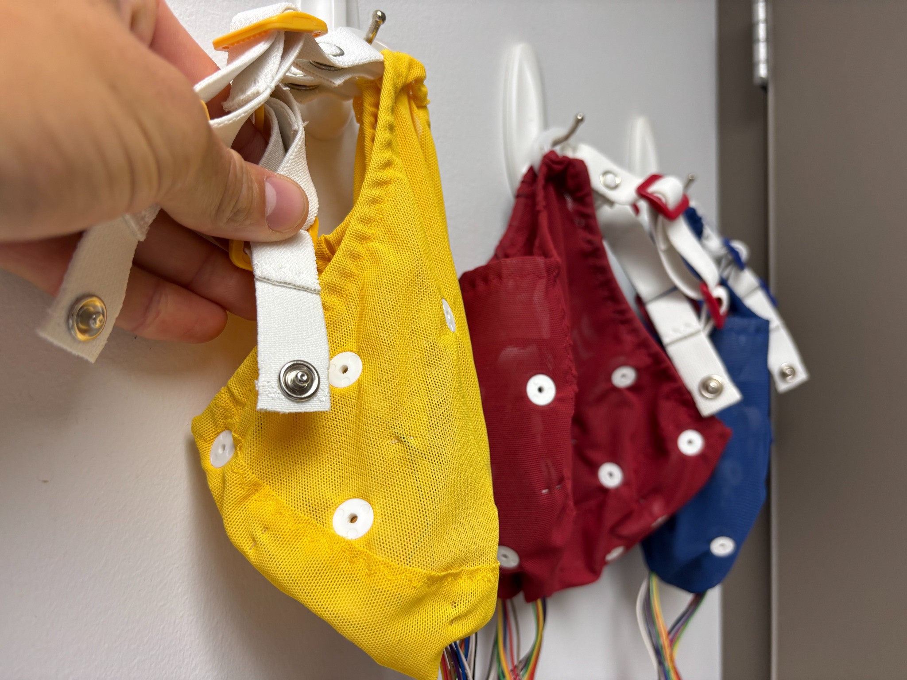
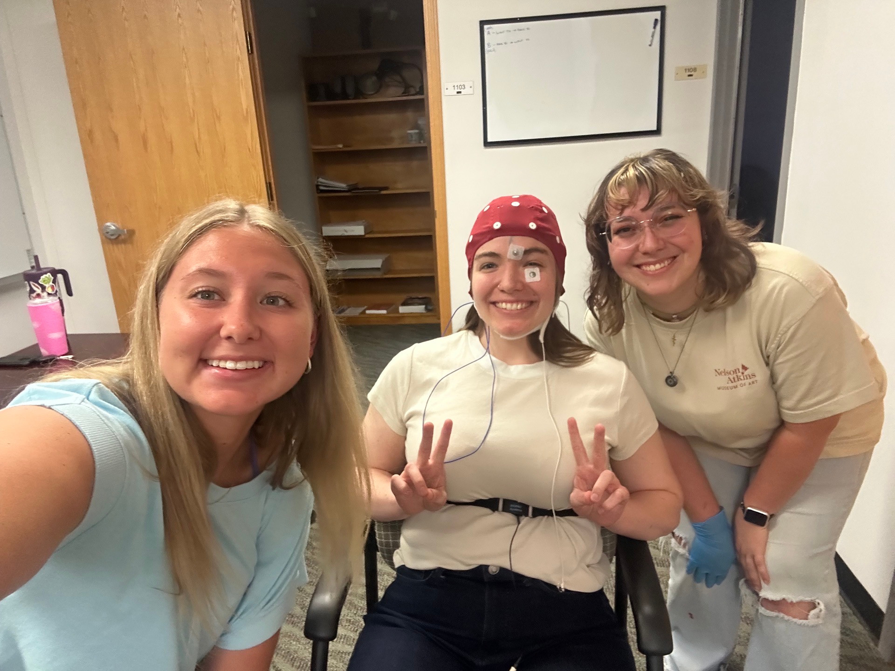
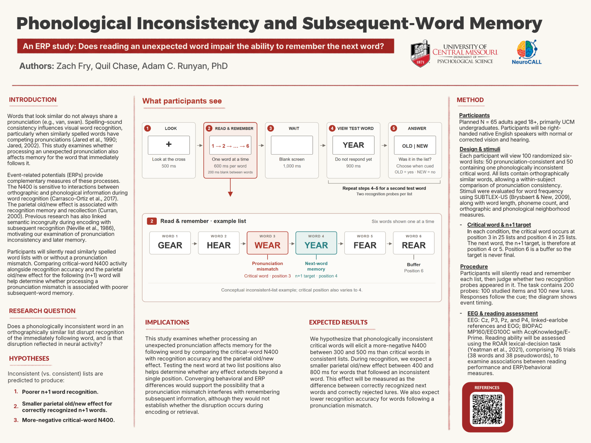

At the critical word
A more-negative N400
We predict a more-negative N400 for phonologically inconsistent critical words than for consistent critical words.
300–500 ms after word onsetNeuroCALL / University of Central Missouri
Research in progressWords can look alike without sounding alike. We’re exploring whether that surprise changes how we remember the word that follows.
Experience the idea01 The question
When a word breaks a pronunciation pattern, does processing it come at a cost to the next word?
Spelling and sound work together as we read. In a list of similarly spelled words, an unexpected pronunciation may require different processing. This project asks whether that moment is associated with poorer recognition of the immediately following word, the n+1 target.
We pair recognition responses with event-related potentials (ERPs): small changes in electrical brain activity measured with EEG and aligned to a particular event, such as seeing a word.
A question, not a conclusion. This site presents the study design and hypotheses. No results are reported here.
02 Inside a trial
Read silently. Hold the words in mind.
Then decide: was this word in the list?
Focus on the cross.
500 msSix words, one at a time.
600 ms each · 200 ms betweenA brief blank screen.
1,000 msLook, but don’t answer yet.
900 msAnswer when the cue appears.
Repeat for a second probe“Old” means the word appeared in the list. “New” means it did not.
03 Experience the idea
A short, illustrative version of the task.
No sign-up. No data saved or submitted.
Choose a mode, then begin.
An interactive illustration, not a research assessment.
This educational demo uses illustrative lists and approximate browser timing. It does not record EEG, measure research-quality reaction times, or collect responses. Your choices exist only on this page and are cleared when you reset or reload. Self-paced mode changes the timing for accessibility.
04 What we predict
Comparing pronunciation-inconsistent and consistent lists may connect the moment of surprise with later memory.
Hypotheses · not findingsAt the critical word
We predict a more-negative N400 for phonologically inconsistent critical words than for consistent critical words.
300–500 ms after word onsetAt recognition
For correctly recognized n+1 words that followed a mismatch, we predict a smaller difference from correctly rejected new words.
400–800 ms after probe onsetIn the response
We predict lower recognition accuracy for the word immediately following a pronunciation mismatch.
Behavioral measureWaveforms are decorative schematics, not recorded EEG or simulated study results. Even converging differences would not by themselves establish whether disruption occurs during encoding or retrieval.
05 A closer look
Study details, as described in the research poster.
The planned sample is 65 adults aged 18+, primarily UCM undergraduates. Participants will be right-handed native English speakers with normal or corrected vision and hearing.
A within-subject design compares 50 pronunciation-consistent lists with 50 inconsistent lists, presented in randomized order.
Every list contains six orthographically similar words. In each condition, the critical word occurs in position 3 in 25 lists and position 4 in 25 lists. The following target is therefore in position 4 or 5.
Position 6 is a buffer, so the target is never the final word. The task includes 200 recognition probes: 100 studied items and 100 new lures.
EEG will be measured at Cz, P3, Pz, and P4, with linked-earlobe references and EOG, using BIOPAC MP160/EEG100C with AcqKnowledge/E-Prime.
Reading ability will be assessed with the ROAR lexical-decision task, comprising 76 trials (38 words and 38 pseudowords), to examine associations with behavioral and ERP measures.
Spelling–sound consistency influences visual word recognition, especially when similarly spelled words have competing pronunciations. The project combines a critical-word N400 measure with later recognition of the next word.
Stimuli were evaluated for frequency using SUBTLEX-US, along with word length, phoneme count, and orthographic and phonological neighborhood measures. See the poster for cited background literature.
06 The people behind the question
Department of Psychological Science
University of Central Missouri
Research co-author
Co-author of this ERP project exploring phonological inconsistency and memory for the following word.
Extended biography to be added.
Research co-author
Co-author of this ERP project exploring phonological inconsistency and memory for the following word.
Extended biography to be added.
NeuroCALL lab director
Assistant professor of Psychological Science at UCM and director of NeuroCALL. He earned his PhD in Psychology, with an emphasis in Behavioral Neuroscience, from the University of Missouri–St. Louis in 2022.

Meet the lab
Neurophysiology of Cognition,
Attention, and Learning Lab
Based in UCM’s Department of Psychological Science, NeuroCALL studies cognition, attention, and learning using physiological measures including EEG, EKG, and EDA.
This project brings that approach to a deceptively simple moment: reading one word, then trying to remember the next.
Explore the NeuroCALL labA glimpse of the wider NeuroCALL environment, beyond this word-recognition project.

07 The full picture
Phonological Inconsistency and Subsequent-Word Memory
Open full-size poster Download poster image
View full size